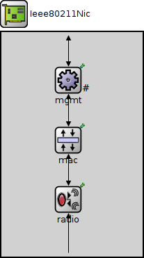
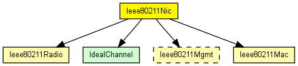
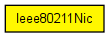

This NIC implements an 802.11 network interface card. It can be configured via the mgmtType parameter to act as an AP or a STA, or for ad-hoc mode.
The following diagram shows usage relationships between types. Unresolved types are missing from the diagram. Click here to see the full picture.
The following diagram shows inheritance relationships for this type. Unresolved types are missing from the diagram. Click here to see the full picture.
| Name | Type | Default value | Description |
|---|---|---|---|
| mgmtType | string |
name of the management module type |
| Name | Value | Description |
|---|---|---|
| display | i=block/ifcard |
| Name | Direction | Size | Description |
|---|---|---|---|
| uppergateIn | input |
to upper layers |
|
| uppergateOut | output |
from upper layers |
|
| radioIn | input |
to receive AirFrames |
| Name | Type | Default value | Description |
|---|---|---|---|
| mac.address | string | "auto" |
MAC address as hex string (12 hex digits), or "auto". "auto" values will be replaced by a generated MAC address in init stage 0. |
| mac.maxQueueSize | int |
max queue length in frames; only used if queueModule=="" |
|
| mac.bitrate | double | ||
| mac.rtsThresholdBytes | int | 2346B |
longer messages will be sent using RTS/CTS |
| mac.retryLimit | int | -1 |
maximum number of retries per message, -1 means default |
| mac.cwMinData | int | -1 |
contention window for normal data frames, -1 means default |
| mac.cwMinBroadcast | int | -1 |
contention window for broadcast messages, -1 means default |
| mac.mtu | int | 1500 | |
| radio.channelNumber | int | 0 |
channel identifier |
| radio.transmitterPower | double | 20mW |
power used for transmission of messages (in mW) |
| radio.bitrate | double |
(in bits/s) |
|
| radio.thermalNoise | double | -110dBm |
base noise level (dBm) |
| radio.pathLossAlpha | double | 2 |
used by the path loss calculation |
| radio.snirThreshold | double | 4dB |
if signal-noise ratio is below this threshold, frame is considered noise (in dB) |
| radio.sensitivity | double |
received signals with power below sensitivity are ignored |
// // This NIC implements an 802.11 network interface card. // It can be configured via the mgmtType parameter to act // as an AP or a STA, or for ad-hoc mode. // module Ieee80211Nic { parameters: string mgmtType; // name of the management module type @display("i=block/ifcard"); gates: input uppergateIn; // to upper layers output uppergateOut; // from upper layers input radioIn @labels(AirFrame); // to receive AirFrames submodules: mgmt: <mgmtType> like Ieee80211Mgmt { parameters: @display("p=96,69;q=wlanDataQueue"); } mac: Ieee80211Mac { parameters: queueModule = "mgmt"; @display("p=96,155"); } radio: Ieee80211Radio { parameters: @display("p=96,240"); } connections: radioIn --> radio.radioIn; radio.uppergateIn <-- mac.lowergateOut; radio.uppergateOut --> mac.lowergateIn; mac.uppergateOut --> mgmt.macIn; mac.uppergateIn <-- mgmt.macOut; mgmt.uppergateOut --> uppergateOut; mgmt.uppergateIn <-- uppergateIn; }